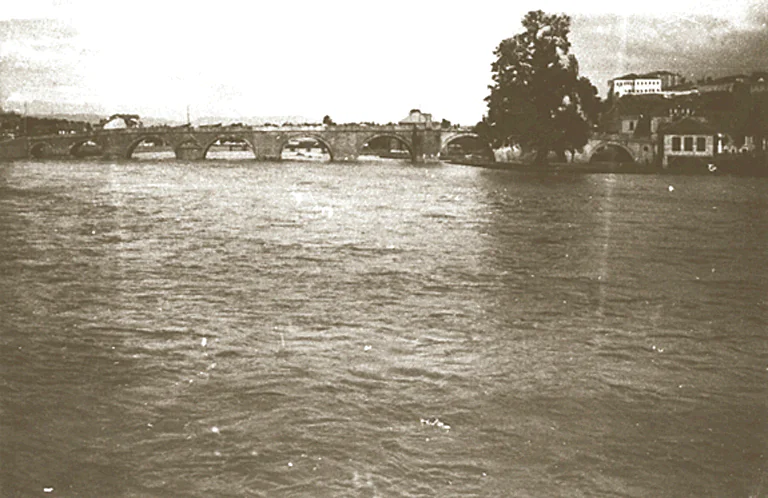
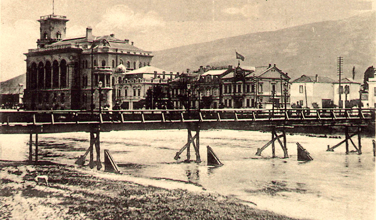
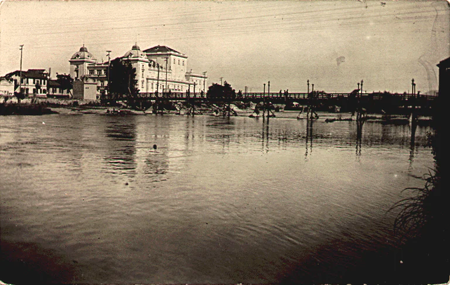

Скопье 1916 - 1917 мост
Документы Балканских войн
- Год
- 1916-1917
- Продолжительность
- 00:13

В центре города через Вардар построен монументальный каменный мост (в народе - Каменный мост). По некоторым турецким источникам, мост построен во второй половине XV века, при султане Мехмеде II. По новейшим исследованиям 1990 года, проведённым при реконструкции, предполагается, что он построен во времена Юстиниана I, в VI веке. Мост сложен из хорошо обработанных каменных блоков, а его конструкция опирается на мощные опоры, соединённые 13 полукруглыми арками. В 1905 году построены бетонные тротуары, до того покрытые досками. В 1937 году мост расширен консолями, на которые перенесены пешеходные дорожки. На снимке Скопье конца XIX века: Каменный мост и старый платан. Справа вверху Скопская крепость - Кале с казармой.

Каменный мост - конец XIX века. На заднем плане слева видна мечеть Бурмали.

Каменный мост - конец XIX века. На заднем плане слева видна мечеть Бурмали.

Скопье в конце XIX и начале XX века (лето) - вид на Каменный мост. На переднем плане телефонный столб с почтовым ящиком. Рядом фонарь - первый образец городского коммунального оборудования. Так как лето, пешеходы защищаются от солнца зонтиками. Грузы перевозили на воловьих повозках, а фаэтоны служили горожанам общественным транспортом. У самого моста справа видно большое мельничное колесо.

Скопье в конце XIX и начале XX века (зима) - вид на Каменный мост. На переднем плане телефонный столб с почтовым ящиком. Рядом фонарь - первый образец городского коммунального оборудования. Видны немощёные грязные улицы. На заднем плане еврейский квартал и Скопская крепость - Кале.

Панорама Каменного моста в начале XX века.

Каменный мост - около 1905 года. На заднем плане слева вверху видна Скопская крепость - Кале с казармами. Справа старый платан.

Каменный мост в конце XIX и начале XX века. Справа вверху видна Скопская крепость - Кале.

Скопье в турский период - начало XX века. На снимке видно, что одна половина Каменного моста имеет каменный парапет, а другая - временное ограждение из железа и дерева. В 1905 году началась замена каменного парапета железным. В Скопье в турский период - начало XX века. На снимке видно, что одна половина Каменного моста имеет каменный парапет, а другая - временное ограждение из железа и дерева. В 1905 году началась замена каменного парапета железным. В левом углу, за Каменным мостом, виден турецкий театр. У самого моста справа видно большое мельничное колесо. Справа старый платан, на котором было повешено тело Карпоша сразу после подавления Карпошского восстания - 1689 год. На заднем плане целиком видны Скопская крепость - Кале и жилые дома еврейского квартала. Интересно отбеливание холстов, которым занимались женщины в чистой воде Вардара, - на переднем плане снимка.

Группа турок на Каменном мосту - начало XX века. Интересно отметить, что тротуары моста покрыты досками.

Железнодорожный мост через Вардар в Скопье - конец XIX века.

Каменный мост через реку Пчиня - окрестности Скопье (сегодня не существует). Судя по человеку на вершине моста, его высота около 15 метров над водой. (1910-е)

Скопье в 1902 году. На снимке виден деревянный мост, а за ним старое кафе «Богес», где проходили первые театральные представления. Над ним Скопская крепость - Кале с военной казармой.

Каменный мост - 1905 год. Слева за ним виден Турецкий театр, а вверху Скопская крепость - Кале.

Вид на правый берег Вардара сквозь крону старого платана - около 1910 года. Видны часть Каменного моста, мечеть Бурмали и лавки перед ней.

Скопье до 1912 года. Каменный мост с консолями и железными перилами. Справа старый платан, а вверху видна Скопская крепость - Кале.

Скопье во время Балканской войны. На заднем плане мечеть Бурмали.

Вид с части Каменного моста на Скопскую крепость - Кале (около 1910 года)

Вид на часть Каменного моста, а на заднем плане слева виден турецкий театр. Над ним возвышается Скопская крепость - Кале. (около 1910 года)

Каменный мост с группой людей на нём - около 1913 года

Каменный мост на Вардаре в Скопье - около 1913 года

Каменный мост через Вардар в Скопье - около 1913 года. На заднем плане справа вверху видна Скопская крепость - Кале.

Скопье в 1912 году - живопись. Каменный мост и мечеть Бурмали. На заднем плане прекрасный зелёный пояс тополей. Заметно включение классической архитектуры. Новые пространства набережных - новый городской элемент. Группы жилых, торговых и ремесленных зданий перед мостом действуют и составляют часть композиции, с традиционными чертами и элементами европейских влияний.

Железный мост через Вардар в Скопье с видом на старую школу, Св. Мину и Св. Богородицу - около 1920 года.

Железный мост, построенный в 1905 году. На заднем плане здание первого Скопского университета. (1915 год)

Железный мост, построенный в 1905 году. На заднем плане здание первого Скопского университета. (1920-е.)

Железный мост через Вардар в Скопье, построенный в 1905 году. На заднем плане здание первого скопского университета. (1920-е)

Железный мост, построенный в 1905 году. (1920-е)

Железный мост через Вардар в Скопье с видом на здания набережной «Димитар Влахов». (1920-е)

Скопье, около 1920 года. Часть городской площади перед Каменным мостом. Первые киоски для услуг и торговли. Киоски отличаются подчёркнутой архитектурой деталей, то есть формой крыш. Мост расширен пешеходными консолями. Вверху на заднем плане видна Скопская крепость - Кале.

Скопье, около 1920 года. Часть городской площади перед Каменным мостом. Перед мостом и на нём видны небольшие постройки для информирования горожан с помощью плакатов. Мост расширен пешеходными консолями. На заднем плане слева вверху видна Скопская крепость - Кале.

Каменный мост с группой людей, наблюдающих за поднявшейся водой в Вардаре. (1920-е)

Каменный мост - 1920 год. На заднем плане виден Оттоманский банк.

Вид с Каменного моста на Старый город и Пайко-махалу с кабинетом зубного врача д-ра Рубенса и Оттоманским банком - около 1927 года.

Вид с Каменного моста на Старый город, чаршию и склон Гази-Бабы. У самого моста справа находился кабинет зубного врача д-ра Рубенса. Чуть правее - здание Оттоманского банка. Между ними была маленькая площадь со стоянкой фаэтонов. А в центре площади стоял памятник павшим в Балканской войне - около 1927 года.

Вид с Каменного моста на Старый город, чаршию и склон Гази-Бабы. У самого моста справа находился кабинет зубного врача д-ра Рубенса. Чуть правее - здание Оттоманского банка. Между ними была маленькая площадь со стоянкой фаэтонов. А в центре площади стоял памятник павшим борцам - около 1927 года.

Вид с Каменного моста на Старый город и Пайко-махалу с кабинетом зубного врача д-ра Рубена и Оттоманским банком - около 1927 года.

Вид на правый берег Вардара с частью моста и Офицерским домом - 1930-е. Слева виден остаток срубленного старого платана, на котором в 1689 году после подавления восстания было повешено тело Карпоша.

Вид на часть Каменного моста, старый платан и Скопскую крепость - Кале - около 1920 года.

Скопье, около 1920 года. Каменный мост со Скопской крепостью - Кале на заднем плане. На переднем плане отбеливание холстов в чистой воде Вардара.

Вид на деревянный мостик и набережную на правом берегу Вардара. Здания с неоклассическими и барочными деталями. Улица - нынешняя «Илинденска». В ряду зданий и Средняя музыкальная школа. На переднем плане деревянный мостик, по которому ходили к Народному театру.

Деревянный мостик через Вардар с Офицерским домом на заднем плане. Рядом здания банка и старой почты - конец 1920-х.

Вид на деревянный мостик через Вардар, а на заднем плане видны Офицерский дом, старая почта и банк - около 1930 года.

Вид на Скопскую крепость - Кале с казармой. Под ней находится еврейский квартал. На переднем плане деревянный мостик - 1950-е.

Вид на Народный театр и деревянный мостик - 1930-е.

Каменный мост - 1930-е. На заднем плане Народный театр, а над ним Скопская крепость - Кале.

Вид на часть площади и Каменный мост. На заднем плане слева видны Народный театр и Скопская крепость - Кале. Примечателен фаэтон как основной вид транспорта горожан. На переднем плане снесённые здания под строительство Народного банка - около 1930 года.

Поднявшаяся вода в Вардаре. Мост наполовину под водой. Снимок сделан с правого берега на левый - 1930-е.

Реконструкция и замена мостовой на Каменном мосту. Вид на дворец Ристича и первые киоски - около 1930-х.

Вид с Каменного моста на площадь. Слева расчистка участка под строительство Народного банка - 1930-е.

Вид с левого берега Вардара на Каменный мост и Офицерский дом - 1930-е.

Каменный мост через Вардар - около 1930 года. На заднем плане виден Народный театр, а справа вверху Скопская крепость - Кале.

Каменный мост - 1950-е.

Часть каменного моста. На заднем плане видна гостиница «Гранд». - 1960-е

Каменный мост со Скопской крепостью - Кале в 1960-е годы, до благоустройства набережной.

Вид на каменный мост и Скопскую крепость - Кале. (1970-е)

Каменный мост в 1970-е годы со средней частью набережной.

Каменный мост и площадь в 1970-е годы.

Вид с правого на левый берег Вардара, на каменный мост, часть площади и новую почту на заднем плане. (1970-е)

Нынешний мост «Гоце Делчев», снимок со Скопской крепости - Кале. (1990-е)

Документы Балканских войн
 Акведук4 открытки
Акведук4 открытки Кале30 открыток
Кале30 открыток Мосты60 открыток
Мосты60 открыток Набережная58 открыток
Набережная58 открыток Площадь46 открыток
Площадь46 открыток Здания66 открыток
Здания66 открыток Христианские храмы19 открыток
Христианские храмы19 открыток Мусульманские здания33 открытки
Мусульманские здания33 открытки Офицерский дом29 открыток
Офицерский дом29 открыток Театр28 открыток
Театр28 открыток Железнодорожный вокзал13 открыток
Железнодорожный вокзал13 открыток Школы36 открыток
Школы36 открыток Парки12 открыток
Парки12 открыток Рынки18 открыток
Рынки18 открыток Улицы38 открыток
Улицы38 открыток Панорама I60 открыток
Панорама I60 открыток Панорама II30 открыток
Панорама II30 открыток Коллажи55 открыток
Коллажи55 открыток Наводнения9 открыток
Наводнения9 открыток Землетрясение27 открыток
Землетрясение27 открыток Скопье 200026 открыток
Скопье 200026 открыток